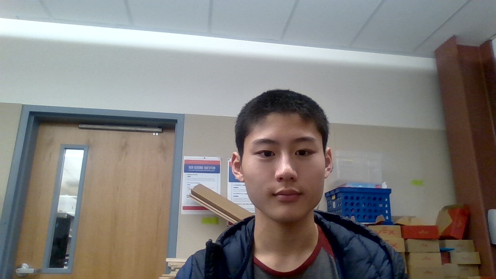

Ready to change the world? Ready to embark on the journey of a lifetime? Well, my name is Felix, and I am here to help you do just exactly that! For my career, I hope to one day be an entrepreneur, either in the tech or medical industries. I am passionate about STEM, and harnessing mathematics and engineering to help the world develop new technological advances. I want to continue pursuing these interests in high school, and manage to enroll in a STEM related career in college to stay on track in my pursuit of helping the world through technology.
Some of my strengths include an ability to lead people and understand people's emotions. I am able to naturally understand what people are feeling toa a very specific degree so that I can assertivly get my point across while also making sure that the other indiidual views me as respectful and knowledgeable. I am also cooperative, and willing to work with individuals from a spectrum of backgrounds in order to help turn a shared goal into reality. Through my participation in school clubs, tennis (a sport that I have been playing for nearly a decade), and academic achievements, I strive to produce work of similar quality in whatever workplace I may find myself in.
From my experiences, I've learned that it is more important to be willing to learn than to know more than others. There is so much knowledge out there, and allowing yourself to find fulfillment in the pursuit of knowledge rather than current amount and depth of knowledge encourages a growth mindset that ultimately sets up individuals for greater success. The same goes for multiple aspects of life, including goalsetting. Rather than set a fixed goal that may be reached within a set time, set a goal that builds upon itself so you continuously aim to be better, no matter how good you currently are at a certain aspect of life. My work experience has taught me that it is much easier to find motivation when encouragement stems from one's willingness to become better rather than their want to obtain a certain status.
